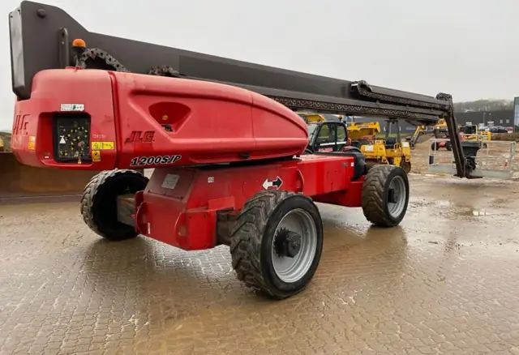
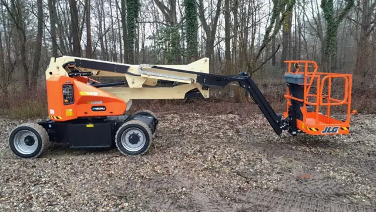
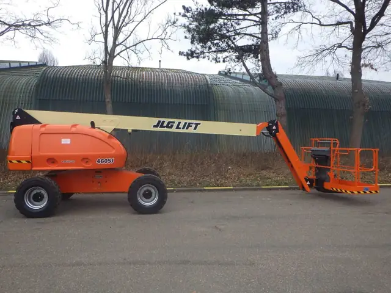

Sold

2012 JLG 860SJ
Telescopic Boom Lift · Origin: Australia
2012Year
VietnamSold to
Nov 2026Sold

A record of every used boom lift and scissor lift we have sold: 212 machines since May 2023, exported mainly to India (187) and Vietnam (17). Looking for one like these? We can source it.








Photos are model photos from our rental fleet and sales stock, not the sold unit. Grey cards = no photo of that model yet.
16 used boom lifts in stock with year, origin and photos – ready for UAE delivery or export.
Tell us the model and year range you need. We source used JLG and Genie machines worldwide.